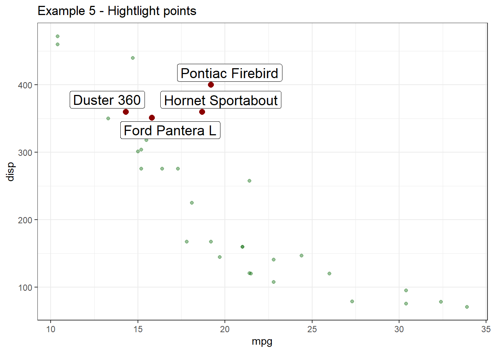

I have been watching gghighlight for couple of months as his package addresses one of problems that I very much care about: “Highlighting in ggplot”. Recently, the package has released in CRAN with big improvement since the first version. So, I decided to test this package in some common charts in ggplot2
First, let’s set up some theme to use during the experiment.
#Set up library & theme
library(dplyr)
library(ggplot2)
library(gghighlight)
my_theme <- function(){
list(
theme_bw(),
scale_fill_brewer(palette = "Set1"),
scale_color_brewer(palette = "Set1")
)
}Highlight bar chart
data <- mtcars %>% mutate(cyl = factor(cyl))
data %>%
ggplot(aes(cyl, mpg)) +
geom_bar(aes(fill = cyl), stat = "identity") +
my_theme() +
gghighlight(cyl == 6) +
labs(title = "Example 1 - highlight without text") 
- Highlight bar chart with text
data %>%
group_by(cyl) %>%
summarise(mpg = sum(mpg)) %>%
ggplot(aes(cyl, mpg)) +
geom_bar(aes(fill = cyl), stat = "identity") +
geom_text(aes(label = mpg),
hjust = -0.3) +
my_theme() +
coord_flip() +
scale_y_continuous(limits = c(0, 320)) +
gghighlight(cyl == 6) +
labs(title = "Example 2 - Hightlight with text (version 1)")As you can see, text in columns where cyl equal to 4 & 8 still appears, which is not what I expected. However, by moving geom_text layer after highlighting layer, I can hide all texts which I don’t want to highlight. Let’s check another example:
data %>%
group_by(cyl) %>%
summarise(mpg = sum(mpg)) %>%
ungroup %>%
ggplot(aes(cyl, mpg)) +
geom_bar(aes(fill = cyl), stat = "identity") +
my_theme() +
coord_flip() +
scale_y_continuous(limits = c(0, 320)) +
gghighlight(cyl == 6) +
geom_text(aes(label = mpg),
hjust = -0.3) +
labs(title = "Example 3 - Hightlight with text (version 2)")Boom! It created the plot I desired exactly! This functionality is so great that I shared with my coleagues right after realizing how cool it is & all members of my team were very impressed!
Let’s check other use cases where gghighlight could change the way we emphasize readers to get insights from charts.
Boxplot
iris %>%
ggplot(aes(Species, Sepal.Length)) +
geom_boxplot(aes(fill = Species)) +
my_theme() +
facet_wrap(~Species) +
gghighlight() +
theme(legend.position = "top") +
labs(title = "Example 4 - highlight for box plot")
Scatter plot
With gghighlight, it is very easy to highlight interesting points in a graph. You can add different layers after gghighlight to emphasize your poitns. For example, I want to create a scatter plot in mtcars with mpg & disp being horizontal & vertical axis respectively and emphasize some points under following conditions:
- Emphasize points with
dispbetween 350 & 400 - Add names of cars for these above points
- Make emphasized points in different color & bigger
The solution utilizing gghighlight is so simple as follows:
df <- mtcars %>% mutate(name = row.names(.))
df %>%
ggplot(aes(mpg, disp)) +
geom_point(col = "darkred") +
my_theme() +
gghighlight(disp > 350 & disp <= 400,
unhighlighted_colour = alpha("darkgreen", 0.4),
use_direct_label = T,
label_key = name,
label_params = list(size = 5)) +
geom_point(col = "darkred", size = 2.5) +
labs(title = "Example 5 - Hightlight points")
After practicing some examples, I do fall in love with this greate R package! It will add much value to ggplot2 it has been already added in my daily packges to use in R! Highly recommended package for all R users and many thanks Hiroaki Yutani for creating such a great R package!